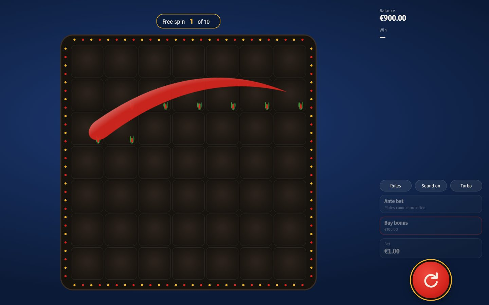
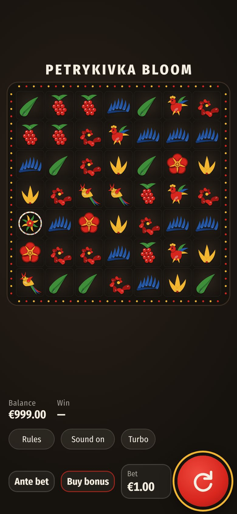
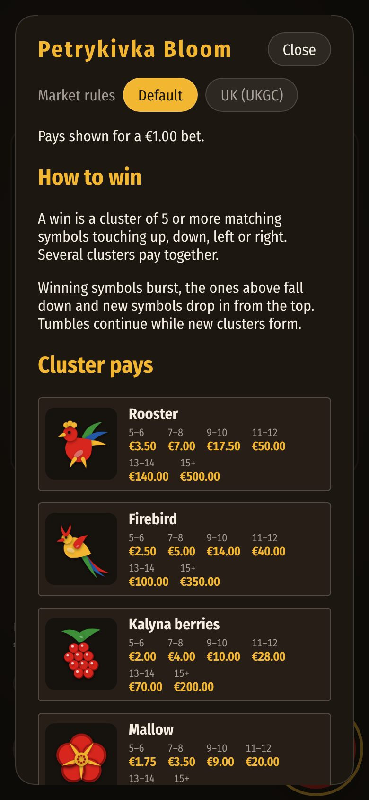
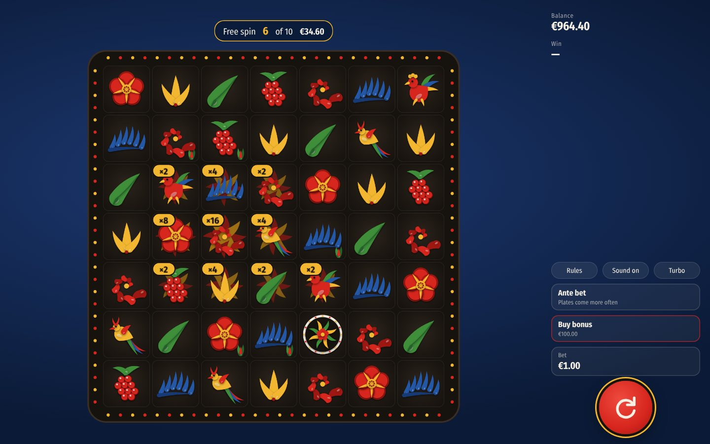

How it plays
Clusters and tumbles
Five or more matching symbols touching sideways or up and down win. They burst, the rest fall, new symbols drop in, and it repeats while clusters form.
Bloom multipliers
A burst leaves a bud. The next win on that cell opens a ×2 flower, then ×4, up to ×128. Flowers under a cluster add up and multiply its pay.
The Stroke
About one spin in 25 starts with a brush stroke across the empty board. Buds bloom behind the brush, a few straight into ×2 flowers.
Free spins
Three or more painted plates give 10 to 20 spins. Flowers stay on the board until the bonus ends, so the multipliers keep growing.
One call computes the whole spin
The engine is a pure function, step(state, request, provider, rules). It returns the starting grid, the Stroke, every tumble with its clusters, pays, multipliers, burst cells and refills, and the plates at the end. The client only plays that list back.
Because nothing in the rules touches the DOM or a timer, the browser demo, the game server, the tests and the simulator all run the same code. The grid geometry sits in its own module: a flood fill finds clusters and a fall plan tells the client which symbol dropped from which row.
Money is in whole cents. Pays are stored in twentieths of the bet and bets are multiples of 20 cents, so no win is ever rounded.

Math tuned by simulation
A multi-threaded simulator plays the real engine for 10 million rounds and reports the return to player with a 95% confidence interval. To tune it, I split the RTP into the base game, which is cheap to measure precisely, and bonus values for 10, 12, 15 and 20 spins. The pay scale and symbol weights then set the shape: how often a spin wins and how much of the RTP comes from the bonus.
| Measure | Base game | Ante bet (×1.25) | Bonus buy (100×) |
|---|---|---|---|
| Return to player | 96.54% ± 0.99% | 96.29% ± 1.40% | 96.79% ± 0.61% |
| Share from free spins | 42.4% | 53.3% | all of it |
| Spins that win | 36.8% | 36.7% | — |
| Free spins | 1 in 233 | 1 in 150 | every time |
| Average bonus | 98.9× bet | 100.0× bet | 96.8× bet |
| Max win, 5,000× bet | 1 in 1,000,000 | 1 in 555,556 | 1 in 3,205 |
A bonus is worth more than the number of its spins suggests: 10 spins average about 96× bet, 20 spins about 620×, because each spin plays on bigger flowers than the last.
The same server, the same rules for every market
- Game server. The Fastify and PostgreSQL server built for Abyssal Tide now hosts this game too. Each step is one transaction with a row lock; repeating a step id returns the recorded result, so a double tap or a lost response never charges twice. The ledger always adds up to the balance.
- Offline when it has to be. With
?server=the game plays through HTTP and survives a reload mid-bonus; if the server is unreachable it switches to the offline demo and says so. - UK Gambling Commission profile. At least 2.5 seconds between spins, no turbo or skipping, no autoplay, no celebration of wins at or below the stake, the session result and time on screen, and no bonus buy. The server rejects a bought bonus too, not just the interface.
- Feature showcase. Rules → See the features plays a real round from a fixed seed on a temporary balance, so a reviewer sees the Stroke, a long chain or the bonus in a minute.


Art and sound written in code
There are no image or audio files. Every symbol is built on Canvas 2D from the basic Petrykivka brush strokes, the seed, the comb and the curl, and each has its own silhouette so the board reads without colour. The music and effects are synthesised with WebAudio on a D-minor pentatonic scale: plucked strings, bells, a shaker and a brush swish.

Built on slotkit
| Reused from the kit | New in this game |
|---|---|
@slotkit/rules: RNG, max win cap, market profiles | 7×7 grid engine: clusters, tumbles, bloom levels, the Stroke |
@slotkit/core: game time, skippable episodes, money format | Board view: falling symbols, flowers, the brush stroke |
@slotkit/controls: bet panel, spin button, popovers | Math model, simulator and seed search for the showcase |
@slotkit/paytable: rules and pays as data | Art, music and the case study you are reading |
| The game server, its storage and ledger | Routes for this game under /api/petrykivka-bloom/ |
Tested
Unit tests cover cluster detection, gravity, pays and multipliers, free spins and retriggers, the max win cap, whole-cent money for every bet and a quick check of the math. The server API is tested in memory and against PostgreSQL. Playwright plays the game in Chromium: a bought bonus to the end, a reload in the middle of free spins, the UK timing rules, the showcase, play through the server, the offline fallback and the phone layout.